1. Uvod v LabView#
1.1. Domača naloga#
Domača naloga
Z uporabo prikazanih funkcij v LabView-u pripravite signal s predpisanimi parametri (individualizirane podatke najdete v e-učilnici).
V kratkem poročilu v okolju Jupyter Notebook (od 3 do 10 celic s kodo) raziščite in prikažite postopek branja in grafičnega prikaza shranjenega signala (poročilo oddajte v obliki .pdf - glejte navodila za oddajo domačih nalog).
Dodatek: Raziščite uporabo poljubne izbrane metode procesiranja signalov (na primer iz modula scipy.signal ali scipy.fft). Prikažite uporabo metode na shranjenem signalu.
NI LabView je grafično programsko okolje podjetja National Instruments, ki je v prvi vrsti namenjeno aplikacijam zajema signalov, krmiljenja laboratorijskih instrumentov in avtomatizacije. Čeprav gre v osnovi za zaprto programsko okolje, LabView poleg komunikacije z National Instruments opremo omogoča uporabo različnih standardnih protokolov in s tem povezavo z različno strojno opremo.
Grafični programski jezik (imenovan tudi “G”), temelji na pretoku podatkov, ki jih uporabnik vodi do programskih elementov v obliki povezav (ang. wire). Posamezni programski elementi se izvedejo takoj, ko imajo na voljo vse potrebne podatke, označene s povezavami, pri čemer je podprta tudi večopravilnost (multiprocessing).
1.1.1. Namestitev programske opreme#
LabView Community Edition
Za nekomercialno rabo je brezplačno na voljo LabView Community Edition, ki omogoča uporabo vseh osnovnih funkcij LabView-a, ki jih potrebujemo pri Procesiranju signalov.
Pozor: Zaradi težav pri povezovanju z našim zajemnim sistemom v novejših verzijah programa priporočamo prenos in namestitev starejše različice (Version) 2022.
Za namestitev LabView Community Edition na vaš računalnik prenesite namestitveno datoteko iz zgornje povezave. Navodila za namestitev in aktivacijo najdete v korakih 1 in 2 na tejle povezavi.
1.2. Prvi program#
Osnovna programska struktura je “Virtualni instrument” (VI, Virtual Instrument), ki je sesetavljen iz blokovneg diagrama (Block Diagram) in krmilne plošče (Front Panel).
Primer najosnovnejšega “Hello, World!” programa v LabView-u.
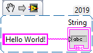
Note
LabView omogoča izvoz programa v obliki .png slike, ki jo je mogoče naložiti v VI.
Označene elemente izvozite v obliki slike z Edit -> Create VI Snippet from Selection.
Za uvoz VI enostavno povlečete tako pripravljeno sliko v blokovni diagram.
Program poženemo z gumbom “Run” na vrhu blokovnega diagrama ali krmilne plošče.
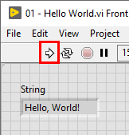
1.3. Uporabne bljižnice#
Bljižnica |
Funkcija |
|---|---|
|
Priklic blokovnega diagrama |
|
Prikaz pomoči |
|
Hitro dodajanje funkcij (Quick Drop) |
|
Počisti nepopolne povezave |
|
Samodejno razporedi elemente programa |
|
Poravnaj označene elemente v vrsto |
1.4. Programiranje v LabView-u#
S programiranjem lahko začnemo v blokovnem diagramu, kjer z desnim miškinim klikom prikličemo meni programskih funkcij, ali v krmilni plošči, kjer desni klik opre nabor kontrolnih elementov.
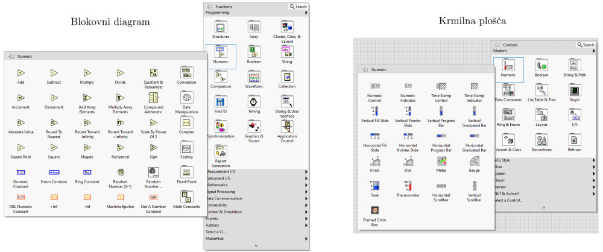
Spremembe v enem pogledu samodejno posodobijo drugega, dodajanje elementa pa zaključimo s povezavo elementov v blokovnem diagramu.
Naloga 1
Pripravimo LabView program, ki na števičnici prikaže vrednost hitrosti, podane z drsnikom, pri tem pa vrednost pretvori iz enot [m/s] v [km/h].
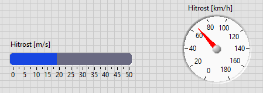
Note
Pretok podatkov in zaporedje izvajanja programa vizualiziramo z možnostjo “Highlight execution”:
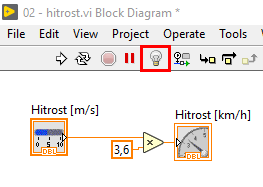
1.4.1. Podatkovni tipi#
Kot pri večini programskih jezikov so tudi v LabView-u pomembni podatkovni tipi v programu.
Pretvorba med kompatibilnimi tipi podatkov je avtomatska (Integer, Double), za pretvorbo med nekaterimi tipi podatkov pa moramo uporabiti ustrezne funkcije.
Do funkcij za pretvorbo pridemo v funkcijskem meniju blokovnega diagrama, v zavihku ustreznega podatkovnega tipa (npr. za pretvorbo med numeričnimi podatki in nizi: String -> Number/String Conversion).
Naloga 2
Poglejmo primer LabView programa, ki prikazuje pretvorbo med Integer, Double in String tipi podtkov.
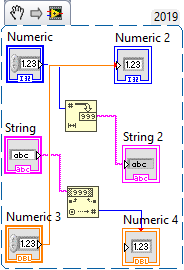
Note
Če pri zagonu programa pride do napake, lahko izpis napak pogledamo s klikom na “List Errors”:
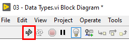
1.4.2. Podprogrami#
Del programa, ki ga želimo večkrat uporabiti, lahko zapakiramo v podprogram (Sub VI).
Označimo del programa, ki ga želimo zapakirati v podprogram, in izberemo Edit -> Create SubVI.
Naloga 3
Primer LabView program, v katerm smo del kode s pretvorbo med enotami v nalogi 1 zapakirali v podprogram.
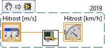
Note
Po spremembi podprograma je včasih potrebno posodobiti tudi povezavo na podprogram v glavnem programu. To storimo z desnim klikom na ikono podprograma in Relink to SubVi.
1.4.3. Krmilni stavki#
Krmilni stavki, podobno kot v drugih programskih jezikih, vplivajo na potek izvajanja LabView programa.
Krmilne stavke najdemo v funkcijskem meniju blokovnega diagrama, v zavihku Structures.
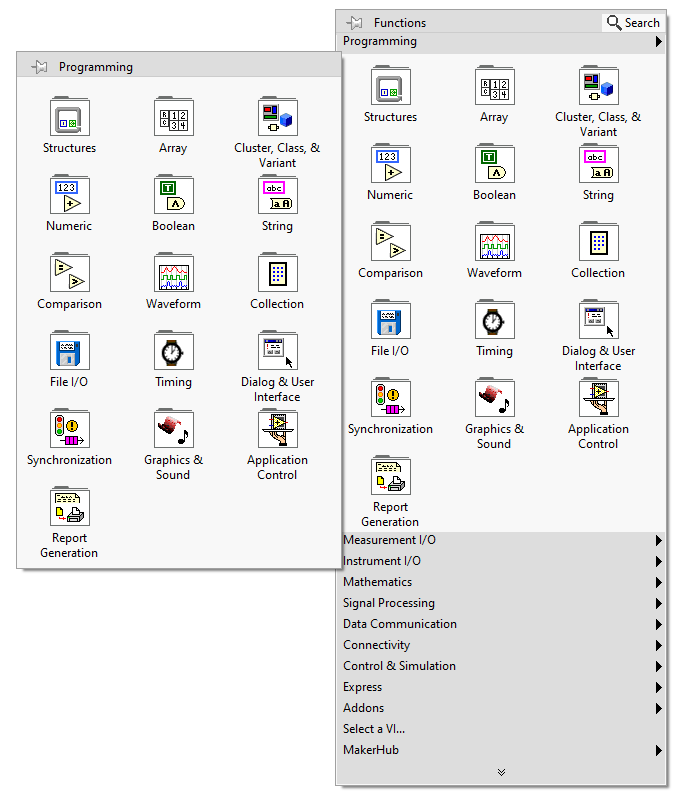
1.4.3.1. Stavek Case#
V Case stavku se, na podlagi izbranega pogoja, odločimo, katerega izmed vnaprej določenih delov programa izvedemo.
(Case satvek v LabView-u je torej podoben Python if stavku.)
Naloga 4
Program pretvorbe enot iz naloge 1 razširimo s Case stavkom, s katerim na podlagi kontrolnega staikala vklopimo / izklopimo pretvorbo enot.
Namig: Začnete lahko z dodajanjem gumba v krmilni plošči, ki ga kasneje ustrezno povežete s Case stavkom.
Naloga 5
Podprogram iz naloge 3 nadgradimo s Case stavkom. Pri tem moramo podprogramu dodati dodaten vhodni parameter, ki ga lahko povežemo s stikalom na krmilni plošči.
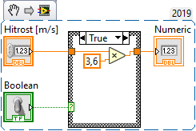
1.4.4. Zanke (For, While)#
Zanke so namenjene iteracijam / ponovljenim izvedbam dela programa v zanki.
1.4.4.1. For zanka#
For zanke so namenjene iteriranju s točno določenim številom ponovitev.
Naloga 6
Ustvarimo for zanko, s katero iteriramo po polju numerčnih vrednosti (Array).
Polje najlažje pripravimo v krmilni plošči (zavihek “Data Containers”), in ga napolnimo z željenimi kontrolnimi elementi (npr. Numeric control).
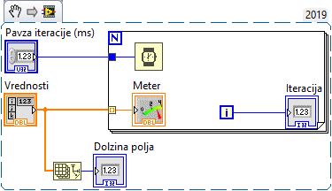
Naloga 7
Program za pretvorbo enot hitrosti iz naloge 4 dopolnite tako, da bo vrednosti hitrosti v [m/s] prebiral iz numeričnega polja, in v for zanki ustrezno posodabljal prikaz na številčnici.
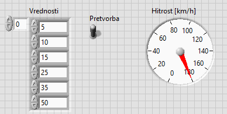
1.4.4.2. While zanka#
While zanko običajno uporabimo, ko želimo izvajanje programa ponavljati, dokler ga sami ne prekinemo.
Naloga 8
Program za pretvorbo enot hitrosti iz naloge 4 dopolnite tako, da bo ves čas preverjal izbrano trenutno vrednost hitrosti v [m/s] in v zanki ustrezno posodabljal prikaz na številčnici.
Namig: Vsi krmilni elementi, katerih vrednosti želite brati sproti, naj bodo znotraj zanke.
Dodatek: Poskusite za prikaz vrednosti namesto številčnice uporabiti graf (Waveform Chart).
1.5. Generiranje signalov#
Čeprav bomo LabView običajno uporabljali za zajem signalov, včasih želimo signale z njim tudi generirati.
Uporabimo lahko funkcijo “Simulate Signal” (Express -> Input -> Simulate Sig).
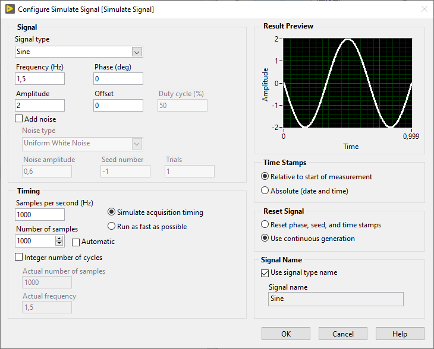
Naloga 9
Kontinuirano generirajmo in na grafu prikazujmo 1 sekundo (1000 vzorcev pri frekvenci vzorčenja 1000 Hz) sinusnega signala s frekvenco 1.5 Hz in amplitudo 2.
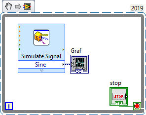
1.6. Shranjevanje podatkov v datoteke#
Čeprav LabView vključuje zmogljive funkcije, namenjena procesiranju signalov, bomo pri tem predmetu za obdelavo zajetih podatkov običajno uporaibli druga orodja (Python).
Podatke, zajete z LabView-om, zato želimo zapisati v datoteke tako, da jih bomo kasneje lahko prebirali obdelali.
Uporabna funkcija za shranjevanje podatkov v LabView-u je “Write To Measurement File” (File I/O -> Write Meas File).
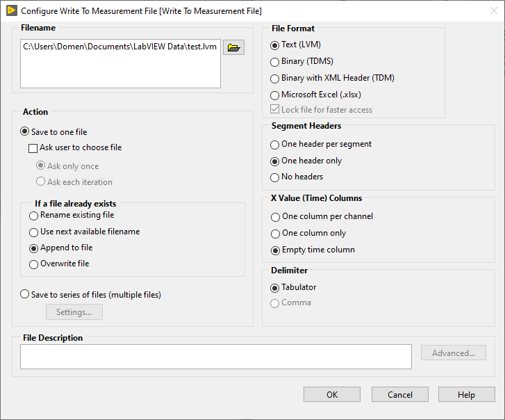
Naloga 10
Generiran sinusni signal shranjujmo v tekstovni obliki (.lvm). Odseke signala, ki jih generiramo v zanki, pripenjajmo na konec datoteke, če ta že obstaja.
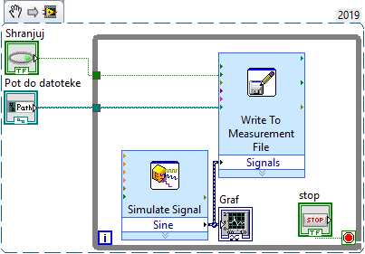
Note
Za branje zapisanih .lvm datotek v programskem jeziku Python lahko uporabite paket lvm_read. Svetujemo, da pogledate tudi primer uporabe na tejle povezavi. Osnovna uporaba je prikazana spodaj.
import lvm_read
file = 'data/01/sinus.lvm'
saved_data = lvm_read.read(file)
print(saved_data.keys())
dict_keys(['Decimal_Separator', 'Writer_Version', 'Reader_Version', 'Separator', 'Multi_Headings', 'X_Columns', 'Time_Pref', 'Operator', 'Date', 'Time', 0, 'Segments'])